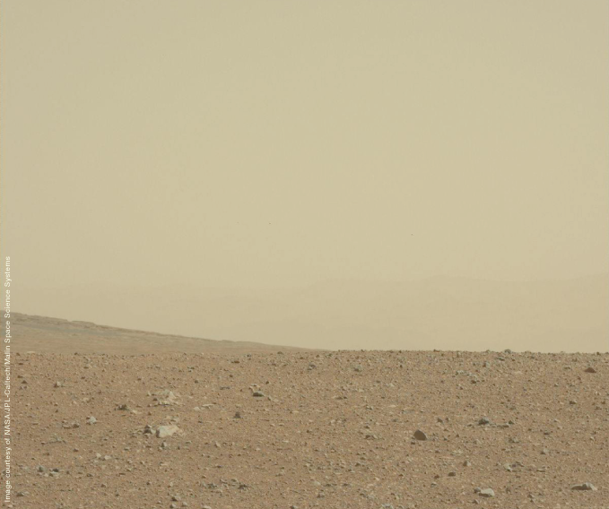

City Seventeen are a three-piece instrumental band from Cambridge.


So the idea is a group of great musicians take over our design studio on a Friday evening and play new music inspired by a book of their choice and a filmmaker makes a film at the same time (but might not film the musicians) and we decorate the walls and invite about forty people to be a part of it all and give them free alcohol and some memories. Volume 1 has happened. Volume 2 is happening.
William Burrough's surreal fable, set in America's Old West, features a cast of notorious characters. The Crying Gun, who breaks into tears at the sight of his opponent; The Priest, who goes into gunfights giving his adversaries the last rites; and the Nihilistic Kid himself, who sets out to challenge the morality of small-town America.
Kim procured some sacred mushrooms from his Indian lover, which he brewed in a clay pot and crooned over it and spit in it and just before sunset we all take the potion and Kim’s spirit guide leads us to a room we had never seen before huge house anyhoo and we find trunks full of female clothes so we dress up and camp around Kim calls himself the Green Nun, and Tom does the Pious Senora, and Boy is the blushing Senorita. The Green Nun rummages around and finds a brace of double-barreled twenty-gauge shotgun pistols perfectly balanced with rubber grips and her loads it with number-four shot.